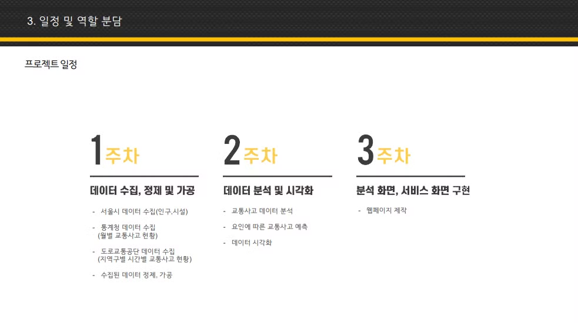

Project
부산인재개발원 부산IT교육센터에서 7개월 동안의 교육을 수료하며 3개의 프로젝트를 진행하였습니다.
교육에서 배운 기술 뿐 아니라, 필요한 추가 학습을 통하여 프로젝트들의 완성도를 높여 성공적으로 마무리 할 수 있었습니다.
맛. ZIP (부산맛집 SNS Web)
-
“Open API(공공데이터포털)를 활용한
SpringBoot와 Thymeleaf 기반의 부산 맛집 공유 SNS 웹”
| 📅 기간 | 2023/09/13 → 2023/10/18 |
| 🔗 GitHub | RomanticToad/Find_My_Matzip |
맛. ZIP (부산맛집 SNS Web)
"바이럴에 지쳐버린 굶주린 영혼들을 위한 맛집 지침서"
🌟 개요
- 내 근처에 위치하는 맛집들의 정보를 제공 (지도에 표시)
- 한눈에 볼 수 있는 금주의 맛집 랭킹순위
- SNS처럼 공유하는 유저들의 맛집 평가
- 팔로잉 팔로우를 통한 유저 즐겨찾기
🌟 개발환경 및 인원
- IDE: InteliJ
- Front: Thymeleaf
- Back: SpringBoot(JPA, Java11)
- DB: MySQL
- API: 부산광역시_부산맛집정보 서비스(공공데이터)
- 인원: 4명
- 기간: 2023/09/13 - 2023/10/18
🌟 담당 역할
- MVC패턴의 서버 구성
-
Github를 활용한 형상관리
-
기능을 구현 및 테스트를 마친 후 브랜치에 PR요청
-
ERD설계
- 게시글,게시글이미지,식당,식당이미지
-
리뷰(게시글) CRUD
-
다중 이미지 업로드가 가능한 리뷰 CRUD 기능을 구현,
스프링 시큐리티의 Authorization ( 권한 설정 ) 을
통해 관리자 전용 리뷰관리 페이지 구현
-
식당 CRUD
-
식당의 CRUD 기능을 구현하고, 식당정보 페이지에서
작성된 리뷰확인가능
-
메인 화면
-
키워드를 통한 게시글 검색과 페이징 처리 기능을
포함한 메인 화면을 구현
-
페이지구성
-
식당정보 조회, 같은 화면에서 해당식당의 모든 리뷰
조회 및 작성 기능
-
리뷰(게시글) 상세 조회, 같은 화면에서 해당 리뷰의
식당정보 조회
🌟 맛.ZIP 프로젝트 상세
-
맛.ZIP 전체 기능 구현
- 전체적인 기능 구현 영상
- 1차 프로젝트 김경태 코드리뷰
- 역할 분담

- 설계
🌟 맛.ZIP - 내가 구현한 기능
-
메인 화면
-
모든 리뷰들을 최신순으로 페이지네이션처리하여 구성
-
리뷰 검색
-
메인화면에서 키워드에 해당하는 리뷰 검색기능 구현
-
식당 목록
- 모든 식당들을 페이지네이션처리하여 구성
-
리뷰등록 / 식당 상세정보
-
리뷰등록 페이지에서 해당 식당의 상세정보를 한 화면에
구성
-
리뷰 상세정보/ 식당 상세정보
-
리뷰 상세페이지에서 작성된 리뷰와 해당 식당의
상세정보를 한 화면에 구성
-
식당 상세정보
-
식당의 상세정보와 해당 식당에 달린 리뷰들을 한
화면에 구성
-
관리자 전용 리뷰 관리 페이지
- 관리자 계정으로 전체 리뷰조회 및 삭제 기능
-
관리자 전용 식당 관리 페이지
- 관리자 계정으로 식당 추가 및 검색 기능
-
맛잘알 리스트(팔로우)
-
사용자의 팔로우ID 리스트를 가져와서 해당 유저
게시글을 검색, 반환
🌟 후기
-
처음으로 팀 프로젝트를 진행하면서, 초보 개발자로서 웹
개발의 기초를 포함한 많은 것을 배우고 성장할 수
있었습니다.
-
첫 프로젝트의 어려움
- SpringBoot 학습을 마치고 곧바로 팀 프로젝트를 시작하였습니다.
- 팀원들이 적극적으로 의견을 제시해주고, 협조적이라 물 흐르듯 프로젝트가 진행되는것 같았습니다.
- 하지만 기획 단계가 끝나고 실제 코드 작성을 시작해야 할 때 무엇부터 진행해야할지 막막한 상황이었습니다.
- 이때 이전 수업에서 배웠던 웹 쇼핑몰 프로젝트의 구조와 진행방식을 참고하여 기초를 튼튼하게 프로젝트를 진행 할 수 있었습니다.
- ERD를 설계하고 JPA를 사용해 DB에 테이블을 자동으로 생성하면서 부터 개발 속도가 향상 되었습니다.
- 테이블이 올바르게 생성되고 나니, 이후 CRUD 기능 구현과 로직 개발이 자연스럽게 이어져 프로젝트를 성공적으로 끝낼수 있었습니다.
-
Spring MVC 패턴의 활용
- Spring Framework 기반의 MVC패턴을 적용하여 Controller(클라이언트 요청처리/서비스 메서드 호출),Service(리포지토리를 호출하여 로직 구현), Repository(DB와 상호작용/CRUD처리) 계층들을 나누었습니다.
- 이를 통해 각 계층이 독립적으로 동작하게 되어, 코드 가독성과 재사용성이 크게 높아질 수 있다는 것을 경험했습니다.
- 처음에는 각 계층을 나누어 동작하는 형태가 불편하였지만, 직접 코드를 유지보수하는 과정에서 매우 효율적이라는 것을 깨달았습니다.
-
Thymeleaf 활용
- Thymeleaf를 사용하여 조건부 렌더링, 반복문을 사용한 데이터 출력, 사용자 및 게시글 정보 표시, 게시글 작성 폼 구현 등의 다양한 기능들을 구현 했습니다.
- 복잡한 자바스크립트 코드를 작성하지 않고도 서버 데이터를 간편하게 화면에 표시할 수 있었고,템플릿 문법이 간결하여 유지보수도 쉽게 할 수 있었습니다.
-
페이징 처리의 중요성
- 처음에는 메인페이지를 페이징 없이 구현 하였더니 모든 게시물을 한번에 다 불러왔었습니다.
- 서버 자원 낭비를 방지하기 위하여 Pageable 인터페이스를 통해 게시글목록, 식당 목록, 검색결과를 페이징 처리 했습니다.
- 이를 통해 서버 성능을 최적화 하고, 나아가 안드로이드 프로젝트에서도 해당 기능을 사용하여 무한스크롤 기능을 구현했습니다.
-
아쉬운점
-
웹 디자인의 아쉬움
- 이번 프로젝트에서는 기본적인 기능 구현에 중점을 두었지만, 사용자 경험(UX)과 사용자 인터페이스(UI) 디자인 측면에서 다소 아쉬움이 남았습니다.
- 페이지의 전반적인 레이아웃은 기능적 요구 사항을 충족했지만, 더 직관적이고 사용자가 편리하게 탐색할 수 있는 디자인을 구현할 시간이 부족했습니다.
- 예를 들어, 버튼의 위치나 색상 배치, 폰트 스타일 등 시각적인 요소들이 일관성 있게 디자인되지 않았으며, 반응형 웹 디자인을 고려하여 다양한 화면 크기에서 최적화된 레이아웃을 제공하는 작업에도 시간이 부족했습니다.
- 사용자 친화적인 구조와 시각적 일관성을 제공하는 것이 웹 서비스에서 매우 중요한 부분이지만, 이번 프로젝트에서는 기능 구현에 많은 시간이 투입되면서 디자인 최적화 작업이 충분히 이루어지지 못한 점이 아쉽게 느껴졌습니다.
- 앞으로는 기능적인 구현뿐만 아니라 사용자 경험을 향상시킬 수 있는 디자인 작업에도 좀 더 시간을 투자해, 더욱 완성도 높은 웹 애플리케이션을 개발할 계획입니다.
-
미숙한 웹 개발
- 아쉬웠던 이유 중 또 하나는, 간단한 게시글 CRUD 기능을 구현하는 데에도 예상보다 많은 어려움을 겪었다는 점입니다.
- 이전 수업에서 사용했던 샘플 코드를 기반으로 작업을 진행했지만, 엔티티 클래스의 사소한 이름 변경에도 데이터베이스에서 데이터를 불러오지 못하는 문제가 발생하는 등 작은 변경에도 큰 영향을 받는 부분이 있었습니다.
- 특히, 프로젝트 진행 중간에 엔티티속성의 추가와 삭제가 반복되면서 코드의 통일성을 유지하기 어려웠습니다.
- 결과적으로 코드가 깔끔하지 못하고 일관성이 부족하게 작성되었으며, 이러한 부분에서 어려움을 크게 느꼈습니다.
- 또한, 엔티티 클래스의 변경으로 인한 문제를 해결하는 과정에서, 데이터베이스 구조와 JPA 설정 간의 의존성이 생각보다 높다는 것을 깨닫게 되었습니다.

맛. ZIP (부산맛집 SNS App)
-
“맛.ZIP웹에서 다양한 기능들을 추가하고
RestFul기반으로 전환한 안드로이드 애플리케이션”
| 📅 기간 | 2023/11/10 → 2023/12/01 |
| 🔗 GitHub | Matzip_Android_Front | Matzip_Android_Back |
맛. ZIP (부산맛집 SNS APP)
"바이럴에 지쳐버린 굶주린 영혼들을 위한 맛집 APP"
🌟 개요
- 내 근처에 위치하는 맛집들의 정보를 제공 (지도에 표시)
- 한눈에 볼 수 있는 금주의 맛집 랭킹순위
- SNS처럼 공유하는 유저들의 맛집 평가
- 팔로잉 팔로우를 통한 유저 즐겨찾기
🌟 개발환경 및 인원


- Front: Android Studio(Kotlin)
- Back: SpringBoot(JPA, Java11)
- DB: MySQL, Firebase Storage
- 배포: Aws EC2, docker
- API: 부산광역시_부산맛집정보 서비스(공공데이터)
- 인원: 4명
- 기간: 2023/11/10 → 2023/12/01
- 출시일: 2023/12/04
🌟 담당 역할
- RestController 구성
-
Github를 활용한 형상관리
-
기능을 구현 및 테스트를 마친 후 브랜치에 PR요청
- Http통신 라이브러리(Retrofit)를 활용하여 안드로이드와 서버 연결
-
RecyclerView + ViewPager + Indicator 로 구성된
메인화면 구성
- 게시판 무한 스크롤 구현
-
리뷰(게시글) CRUD 구현
-
다중 이미지 업로드가 가능한 리뷰 CRUD 기능을 구현
-
식당상세 구현
- 식당의 상세정보 화면 구현
-
출시
-
Aws 위에 Ubuntu설치하여 backendserver, Mysql (docker
활용하여 설치) 배포
- 구글 플레이콘솔에 맛.ZIP앱 출시
🌟 맛.ZIP APP 프로젝트 상세
-
맛.ZIP APP 전체 기능 구현
- (전체적인 기능 구현 영상)
- 2차 프로젝트 김경태 코드리뷰
- 역할 분담
- 설계
🌟 맛.ZIP - 내가 구현한 기능
-
메인 화면
-
RecyclerView를 활용하여 스크롤 할때마다 서버에서
RestFulAPI를 받아와 무한 스크롤 구현
-
ViewPager + indicator를 활용하여 리뷰 이미지들을
슬라이드 처리
-
리뷰(게시글)의 줄 수를 확인 하여 텍스트를 간략히
줄이고, 더보기를 누르면 전체 텍스트를 표시
-
팔로잉 화면
-
하단 플로팅 버튼 클릭시, 내가 팔로우 한 유저들의
게시글 조회
-
식당 상세화면
-
식당의 평점, 정보 등 상세화면 구현/ 플로팅 버튼으로
리뷰 작성가능
-
리뷰(게시글) 작성화면
- 제목, 평점, 상세내용, 다중 이미지 등록 구현
- 이미지파일은 FireBase Storage에 저장
-
리뷰(게시글) 상세화면
-
해당 리뷰의 상세정보 및 가게의 간략한 정보 / 좋아요,
댓글(팀원 구현)
-
ViewPager + indicator를 활용하여 리뷰 이미지들을
슬라이드 처리, 클릭시 이미지 전체화면으로 전환
-
리뷰(게시글) 수정
- 게시글의 내용 및 다중 이미지 수정 구현
-
수정된 이미지는 FireBase Storage에서 삭제 후
재업로드
-
리뷰(게시글) 삭제
- 게시글의 모든 데이터 삭제 구현
- FireBase Storage에서 이미지 삭제
-
AWS Lightsail ubuntu 구매 및 서버 배포
- JDK 17 / Docker / MySQL 8 설치 및 설정
- 2차 팀 프로젝트 ‘mat.zip’ GooglePlay 스토어에 성공적으로 출시
🌟 후기
-
2차 팀 프로젝트 '맛.ZIP APP'을 AndroidStudio(Kotlin)와
SpringBoot(RestfulAPI)를 활용하여 구현 하였습니다.
-
Kotlin의 간결함/java 호환성
- AndroidStudio에서 java로 작성된 코드를 Kotlin 언어로 바로 변환이 되어 작업이 편했던 경험이 있습니다.
- 그 외에도 코드를 굉장히 간결하고 깔끔하게 작성 할 수 있어, 가독성이 좋아 코드 유지보수를 할때 매우 편했습니다.
-
Retrofit 2를 활용한 SpringBoot(RESTful API)서버와의
통신
- 1차 프로젝트에서 사용하던 서버를 RESTful API로 전환하여 Retrofit 2으로 통신을 손쉽게 할 수 있었습니다.
- GsonConverterFactory를 사용하여 서버로부터 전달받은 JSON 형식의 데이터를 별도의 추가 작업 없이 쉽게 모델 객체로 변환할 수 있었습니다. 덕분에 API 응답 처리가 매우 단순하고 효율적이었습니다.
-
FireBase Storage를 이미지저장소로 활용
- 게시글,식당,유저 등 모든 이미지들을 보관할 저장소로서 FireBase Storage를 채택했습니다.
- FireBase Storage에 저장된 이미지의 주소를 DB에 같이 저장하는 것으로 서버측에서 이미지를 효율적으로 관리하고 로드하도록 했습니다.
-
RecyclerView와 ViewPager로 구성된 메인화면의 어려움
- 메인 화면은 게시글들을 RecyclerView로 서버에서 페이징처리된 게시글 정보들을 보여줍니다.
- 일정부분 스크롤이 되면 다음 페이지의 정보를 서버에서 받아와 추가로 그려주는 방식으로 무한 스크롤을 구현하였습니다
- 각 게시글에 속해있는 이미지들을 RecyclerView내부에 포함된 ViewPager에서 슬라이드 형식으로 보여주는데, 이 두 기능을 합쳐서 동시에 구현하는게 힘들었습니다.
- 관련 자료를 포털에서 찾아보았지만, 원하는 구성을 찾지 못해 직접 구현하는데에 시간이 오래걸렸습니다.
- 1차 프로젝트에서는 게시글당 대표 이미지 1장만을 서버에서 가져왔으나, 2차 프로젝트에서는 게시글의 모든 이미지를 불러올 수 있도록 기능을 확장했습니다.
- 게시글 무한 스크롤을 구현 할 때, 게시글에 속한 이미지의 갯수가 게시글을 불러오는 갯수에 영향을 미쳤습니다.
- 그 결과, 불러와야하는 게시글의 숫자가 통일되지 못하여 문제가 발생했었습니다.
- 이를 해결하기 위해, 게시글 업로드시 이미지 갯수(1~4)만큼 저장되던 이미지 데이터를 빈값을 넣는것으로 게시글에 포함된 이미지데이터갯수를 4개로 통일 하였습니다.
-
게시글 업로드의 리팩토링
- 프로젝트의 발표 전, 게시글 CRUD기능을 완성 하였지만 게시글을 업로드 하는 로직이 마음에 들지 않았습니다.
- 기존 업로드 기능에서는 사용자가 이미지를 선택한 후, 마음에 들지 않는 이미지를 취소하고 재선택하는 기능이 없었습니다.
- 또한, 중복된 이미지가 올라가거나 일부 이미지가 업로드되지 않는 문제가 있었습니다.
- 게시글 업로드 로직을 처음부터 리팩토링하여, 사용자가 이미지를 자유롭게 선택하고 취소할 수 있도록 개선했습니다.
- 게시글 이미지를 업로드 할 때, 이미지가 FireBase Storage에 등록이 되었는데도 다음 화면에서 이미지로딩이 되지않는 문제가 있었습니다.
- 업로드가 완료된 후 이미지 로딩을 위한 시간을 주기위해, 업로드 후 딜레이를 추가하여 해당 문제를 고쳤습니다.
실제 모바일기기에서 작동하는 모습을 보며 작업하는것은 매우 즐거운 일이였습니다.
시작부터 끝까지 많은 노력을 들여, 가장 즐겁게 하였던 프로젝트 였습니다.
-
아쉬운점
-
RecyclerView의 상태 유지 문제
- 메인 프래그먼트에서 다른 프래그먼트로 이동한 후 다시 돌아올 때, RecyclerView에서 이전에 스크롤된 위치를 유지하고 싶었습니다.
- 하지만 돌아올 때마다 RecyclerView가 초기화되어 항상 최상단에 위치하는 문제가 발생했습니다.
- 프로젝트 일정으로 인해 해당 기능을 완전히 구현하지는 못했고, 최종적으로는 RecyclerView가 초기화되는 상태로 마무리되었습니다. 추후에는 이 문제를 해결할 계획입니다.
서울시 노약자 교통사고 요인분석 웹서비스
- Open API와 데이터 크롤링을 통해 데이터를 수집/가공/분석
- 노약자 교통사고 위험지역 및 사고요인을 웹사이트로 제공
| 📅 기간 | 2024/01/10 → 2024/02/06 |
| 🔗 GitHub | RomanticToad/Seoul_Traffic-Accidents |
서울시 노약자 교통사고 요인분석 웹서비스
"서울시 노약자를 위한 교통사고 요인 분석"
🌟 개요
- 서울시에서 발생하는 노약자 교통사고 발생에 영향을 미치는 요인 파악
- 사고 다발 지점의 특성을 다각도로 분석
- 노약자 교통사고의 발생 방지를 위한 방안을 제시
- 분석의 결과를 웹 대시보드를 통해 시각적으로 서비스
🌟 개발환경 및 인원

- Front: React
- 데이터분석/수집/가공: Python(numpy, pandas, matplotlib, seaborn, Jupyter Notebook 등)
- API: 교통사고분석시스템(Taas), 서울 열린데이터광장(서울시 교통사고 현황 통계 등),공공데이터(한국도로공사_교통사고통계, 전국 교통사고 다발지역표준 데이터 등 )
- 인원: 5명
- 기간: 2024/01/10 → 2024/02/06
🌟 담당 역할
-
기획
- 서울시 노인 교통사고요인의 주제 선정
-
Github를 활용한 형상관리
-
기능을 구현 및 테스트를 마친 후 브랜치에 PR요청
-
데이터 수집
-
서울 특별시 연도별 연령별 인구수, 노인 여가복지시설,
노인 의료복지시설, 재가노인복지시설, 전통시장, 공원
의 데이터를 공공데이터를 통하여 수집
-
Selenium을 사용하여 Chrome으로 자동화된 크롤링 구현,
동적 웹 페이지에서 정보를 수집 》TAAS 교통사고
분석시스템에서 제공되지않는 사고발생지 좌표를
크롤링하여 데이터 추출 》30,000건 이상의 교통사고
데이터 좌표값 추출 및 문서화
-
데이터 가공
-
Pandas 및 Numpy 라이브러리를 활용하여 데이터 정제,
변환, 결측치 처리, 이상치 제거, 중복 데이터 관리,
데이터 형식 변환 활용
-
Pyproj 라이브러리를 사용하여, 크롤링을 통해 얻은
좌표 데이터를 한국 지역 좌표계(epsg:5181)에서 전
세계에서 널리 사용되는 위도/경도 좌표계(epsg:4326)로
변환을 통해 실제 지도에 활용
- 전처리된 데이터를 csv 파일로 문서화
-
데이터 분석
-
교통사고 발생 요인들 간의 상관관계를 데이터 시각화를
통해 분석하여, 노약자 교통사고와 연관된 주요
요인들을 도출
-
Scikit-Learn 라이브러리를 활용하여 선형회귀(Linear
Regression), 랜덤포레스트(Random Forest), 그래디언트
부스팅(Gradient Boosting),의사 결정 트리(Decision
Tree)을 초기화하고 학습
-
평균 제곱 오차(Mean Squared Error)와 결정
계수(R-squared)를 활용하여 각 모델의 성능을
평가하여, 최적의 모델 선정
-
실제 데이터값과 학습된 모델의 예측 데이터값을
비교하여 문서화 및 차트로 시각화
-
화면설계 / 구현
-
Matplotlib, Seaborn, Plotly 라이브러리를 활용하여
데이터를 다양한 그래프와 차트로 시각화
-
folium을 활용하여 지도 생성 및 Choropleth 레이어
추가, Marker를 활용하여 지도에 마커 추가
-
React 기반 샘플 대시보드를 활용하여, 간단하게 서비스
웹 페이지 구현
🌟 서울시 노약자 교통사고 요인분석 프로젝트 상세
-
PPT 발표
- (전체 발표)
-
PPT 발표
- (나의 발표 파트)
- 나의 코드리뷰
- 전체 기능구현
- 역할 분담
- 시스템 구성
🌟 서울시 노약자 교통사고 요인분석 프로젝트 - 내가 구현한 기능
-
TAAS 데이터 수집
-
교통사고분석시스템(TAAS)에서 교통사고데이터를 수집.
-
TAAS 사고 좌표 데이터 크롤링
-
정확한 사고 좌표값을 구하려고 하였으나, TAAS에서
제공하지 않았기 때문에 Selenium과 Chrome브라우저를
활용하여 교통사고 좌표 33698개를 자동화된 크롤링으로
수집.
-
크롤링으로 얻은 좌표계 변환
-
Pyproj 라이브러리를 사용하여 크롤링을 통해 얻은
데이터를 한국 지역 좌표계에서 전 세계에서 널리
사용되는 위도/경도 좌표계로 변환(epsg:5181 →
epsg:4326)

-
데이터활용을 위한 가공
-
수집한 데이터들을 Pandas 및 Numpy 라이브러리를
활용하여 데이터 정제, 변환, 결측치 처리, 이상치
제거, 중복 데이터 관리, 데이터 형식 변환(CSV)
-
여러 포털에서 공공데이터 수집
-
KOSIS, DATA.GO.KR, 한국도로교통공사, 국토교통부
등에서 필요한 데이터 수집
-
데이터활용을 위한 가공
-
수집한 데이터들을 Pandas 및 Numpy 라이브러리를
활용하여 데이터 정제, 변환, 결측치 처리, 이상치
제거, 중복 데이터 관리, 데이터 형식 변환(CSV)
- 서울시에서 발생한 교통사고를 지도에 클러스터링하여 시각화

-
전체사고와 노인보행자 사고 비교분석을 위해 지도에
시각화
-
서울시에서 발생한 노인보행자 교통사고를 지도에
Choropleth를 활용하여 시각화

-
서울시 노인 보행자 사고의 남성 여성을 나누어 분석
-
Pandas,Numpy를 이용하여 데이터를 처리한 후,
matplotlib으로 차트 시각화
-
비교적 여성보행자의 사고수, 상해정도가 높다는 결론.
-
구 별 / 시간대 별 사고빈도 분석
-
seaborn과 matplotlib을 사용하여 스택드 에어리어
그래프, 히트맵 그래프로 시각화
-
각 월별로 거의 동일한 유형의 사고빈도를 보여줌
-
일요일에는 눈에 띄게 노인보행자 사고량이 줄어듦
-
사고 요인 상관관계 분석
-
노인보행자 사고만 다발적으로 일어나는 이유를
노인복지시설 및 자주 찾는 장소에 이유가 있다는
가설을 세움.
-
서울 특별시 연도별 연령별 인구수, 노인 여가복지시설,
노인 의료복지시설, 재가노인복지시설, 병원, 전통시장,
공원의 데이터를 수집
- 해당 요인들의 상관관계 분석을 진행
-
머신 러닝 모델을 활용하여 성능평가
-
사고 발생 건수 예측을 위하여,선형 회귀, 랜덤
포레스트, 그래디언트 부스팅, 결정 트리 모델을 학습
및 예측 수행
-
각 모델의 평균 제곱 오차(MSE)와 결정
계수(R-squared)를 사용하여 성능을 측정
- 가장 적합한 모델로 선형 회귀 모델을 채택
-
선형 회귀(Linear Regression)모델을 학습/예측/비교
-
fit 메소드를 사용하여 독립 변수 X와 종속 변수 y를
모델에 학습
-
matplotlib과 seaborn을 사용하여 지역구별로 실제 사고
발생 건수와 예측된 사고 발생 건수를 꺾은선 그래프로
시각화

-
대시보드형 웹 페이지 구현 1: 메인화면
-
React기반 대시보드 샘플을 활용하여, 분석데이터 제공
-
지도의 각 구를 나누어, 선택하면 해당 구에 대한
정보를 제공
-
대시보드형 웹 페이지 구현 2: 시간대별 분석
-
노인 보행자 사고를 시간대별로 분석한 그래프,차트를
시각적으로 제공

-
대시보드형 웹 페이지 구현 3: 남/녀 피해별 분석
-
노인 보행자 사고를 남/녀를 기준으로 분석한 그래프,
차트를 시각적으로 제공

-
대시보드형 웹 페이지 구현 4: 노인 보행자 교통사고량
예측 그래프
-
선형 회귀 모델에 여러 요인들과 보행자 사고데이터를
학습시킨 후 예측한 그래프를 시각화 하여 제공

🌟 후기
-
이번 3차 프로젝트를 진행하며 Python을 활용하는 많은
방법을 배웠습니다.
-
웹 크롤링
- TAAS에서 원하는 데이터를 직접 제공하지 않아 Selenium과 Chrome 브라우저를 활용한 웹 크롤링을 시도했습니다. 이 과정에서 웹 페이지의 구조를 이해하고, 동적 페이지에서 데이터를 추출하는 방법을 익혔습니다.
-
좌표계 변환
- 크롤링한 좌표를 지도에 찍었을 때 엉뚱한곳에 찍혀서 왜 그런지 이해하는데 시간이 걸렸습니다. TAAS에서 크롤링한 좌표가 구글지도에서 사용하는 좌표계와 달라, 좌표계 변환을 통하여 실제 지도에 적용 할 수 있었습니다.
-
데이터 정제
- 수집한 공공데이터에서 문제가 있는 데이터들이 상당했기 때문에, Pandas와 Numpy를 활용하여 결측치 처리, 이상치 제거 등 데이터 정제 과정을 거치며 데이터에 신뢰성을 주기위해 노력 했습니다.
-
시각화 도구 활용
- Matplotlib, Seaborn, Plotly 등을 사용하여 데이터를 다양한 그래프와 차트로 시각화하면서 접했습니다.
-
지도 시각화
- Folium을 활용하여 지도 위에 데이터를 시각화하면서 서울의 테두리 좌표값을 활용하여 서울 지도를 그리는 등 지도로 할 수 있는 다양한 시각화를 해 보았습니다.
-
머신 러닝 모델
- Scikit-Learn을 사용하여 선형 회귀, 랜덤 포레스트, 그래디언트 부스팅 등 다양한 모델을 학습시키고 성능을 평가하면서 각 모델의 특징과 활용 방법을 배웠습니다.
-
아쉬운점
-
모델 최적화 경험 부족
- 모델을 사용하면서도 성능을 향상 시키기위한 기법에 대한 이해가 많이 부족하다는 것을 느꼈고, 이에 대한 추가 학습이 필요하다고 생각했습니다.
-
조악한 서비스 웹 페이지
- 프로젝트의 주제를 여러차례 바꾸면서, 프로젝트마감까지의 시간이 많이 부족한 상황이었습니다. 서비스할 웹을 급하게 구현 하면서 이미지를 통째로 삽입 하는등 사용자의 입장에서 깔끔하게 구현하지 못하여 많이 아쉬웠습니다.
-
현실과의 괴리
- 본 프로젝트는 서울시 노약자의 교통사고 요인을 분석하여, 해당 교통사고를 줄이고자 하는 목적이 있었습니다. 하지만 이를 실제 정책이나 사회 시스템에 반영하고자 하는 것은 큰 문제였습니다. 개발자로서 현실 세계를 변화시키는 데에는 많은 제약과 장벽이 있다는 것을 느꼈습니다.